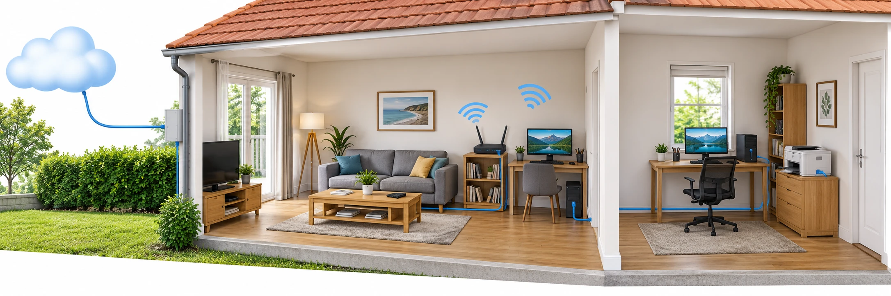

OBSERVER · EXPÉRIMENTER · EXPLIQUER
Comment fonctionne le réseau de la maison
Retrouve la maison complète et teste ses liaisons. Distingue le switch, le Wi-Fi de la box et Internet. Repère une panne, change une seule condition et vérifie la réparation.

✎ Garde ta feuille à côté de toi.Ordinateur : construis et teste. Papier : croquis, résultats et explications.
Des observations pour expliquer
- Q1 à Q4 : suis ta fiche. Conserve les réglages, les relevés et les explications sur papier.
Appuie ton explication sur une valeur, un changement observé ou une comparaison. Distingue ce que montre le modèle et ce qui reste à vérifier.